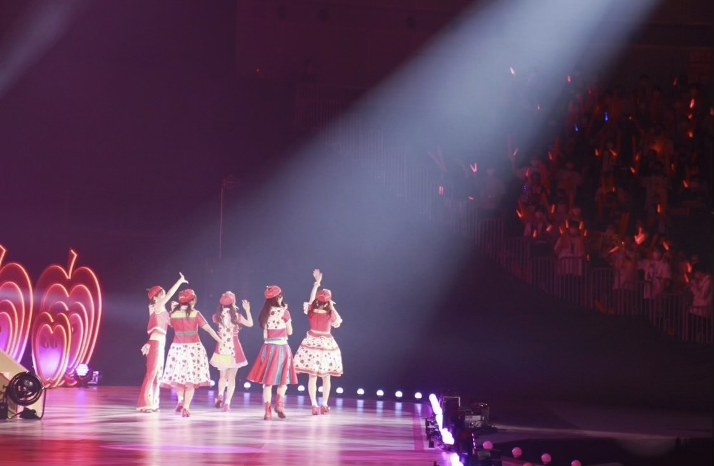

2021/0713Tueありがとうっ(o・・o)
松村沙友理です
本日7月13日をもちまして
乃木坂46を卒業します。
たくさんの応援ありがとうございました。
秋元先生に書いてもらった
さ〜ゆ〜Ready?の歌詞の通り
完全燃焼できました！
みなさんのおかげで
幸せなアイドル人生でした。
乃木坂46の一員であったことを誇りに
さゆりんご頑張ります
これからも応援よろしくお願いします。
自分の思いの丈は
卒業記念写真集の
ロングインタビューと
手書きのメッセージに込めました。
ここでは、言いづらい事も
全部詰め込みました。
手に取って読んでくださる方に
伝わりますように
本当にありがとうございました。
個人のHPも開設しました。
よろしくお願いします！
またお会いできる日を楽しみにしております♡





2021/07/13 23:59
コメント(596)
沙友理ちゃん10年間ほんまにお疲れ様でした。
初めて握手会に行った時に一番最初に握手したのが沙友理ちゃんでその時の対応が神すぎてそっから一気に沙友理ちゃんのモチベが来ました。
最後に握手したかったけどこのご時世で出来なくてミーグリも予定が合わなくて参加出来なかったのは今でも後悔してます。
なのでまた会える機会があれば絶対に会いに行きます！！
これからも頑張ってください！ずっとずっと応援してます！更なる活躍を期待してます！！
沙友理ちゃんに出会えてほんまによかったです！！
初めて握手会に行った時に一番最初に握手したのが沙友理ちゃんでその時の対応が神すぎてそっから一気に沙友理ちゃんのモチベが来ました。
最後に握手したかったけどこのご時世で出来なくてミーグリも予定が合わなくて参加出来なかったのは今でも後悔してます。
なのでまた会える機会があれば絶対に会いに行きます！！
これからも頑張ってください！ずっとずっと応援してます！更なる活躍を期待してます！！
沙友理ちゃんに出会えてほんまによかったです！！
今まで10年間ありがとう！ほんとにこれしか言えないです辛かった時のことを自分達はその気持ちを共有できないけども辛かったということはわかっているつもりではいたけども卒業ってことを改めて実感するとほんとに寂しいです。今日のドラマを見てそう思いました。
まっちゅん、今日までお疲れ様でした！
卒業おめでとつ！
まっちゅんが乃木坂46にいてくれて本当によかったです。かわいいだけじゃなくて面白さまである唯一無二の存在で、まちゅが活躍してる収録回は本当に面白くて、いつも笑顔にさせてもらってました。
これからのご活躍期待してるね！
ずっと応援してます♩
卒業おめでとつ！
まっちゅんが乃木坂46にいてくれて本当によかったです。かわいいだけじゃなくて面白さまである唯一無二の存在で、まちゅが活躍してる収録回は本当に面白くて、いつも笑顔にさせてもらってました。
これからのご活躍期待してるね！
ずっと応援してます♩
乃木中感動して泣いてしまいました。
カワイかったしかっこよかったです。
お疲れ様でした。
引き続き応援します。
カワイかったしかっこよかったです。
お疲れ様でした。
引き続き応援します。
卒業おめでとうございます
貴方に出会えて良かった。それが私の誇りです！
私の人生最大の推しメン、松村沙友理さん大好きです！お疲れ様でした！
そしてただの松村沙友理さん、これからよろしくお願いいたします！
本当にお疲れ様でした！
貴方に出会えて良かった。それが私の誇りです！
私の人生最大の推しメン、松村沙友理さん大好きです！お疲れ様でした！
そしてただの松村沙友理さん、これからよろしくお願いいたします！
本当にお疲れ様でした！
ありがとうございまっちゅん
本当にありがとう！
松村沙友理さんあなたに出会えて本当に良かった。またどこかで会いましょう。これからも頑張ってください！お疲れ様でした。
本当にありがとう！
松村沙友理さんあなたに出会えて本当に良かった。またどこかで会いましょう。これからも頑張ってください！お疲れ様でした。
ありがとうございまっちゅん
本当にありがとう！
松村沙友理さんあなたに出会えて本当に良かった。またどこかで会いましょう。これからも頑張ってください！お疲れ様でした。
本当にありがとう！
松村沙友理さんあなたに出会えて本当に良かった。またどこかで会いましょう。これからも頑張ってください！お疲れ様でした。
沙友理ちゃん。10年間ありがとう。本当にありがとう。
沙友理ちゃんのことを追いかけていた4年間、幸せな思い出しかありません。人生最大の推しメンです。大好きです。これからもさゆりんごの人生を応援させてください。ひとまず乃木坂46の活動、お疲れ様でした！好きだー！！！！
沙友理ちゃんのことを追いかけていた4年間、幸せな思い出しかありません。人生最大の推しメンです。大好きです。これからもさゆりんごの人生を応援させてください。ひとまず乃木坂46の活動、お疲れ様でした！好きだー！！！！
まちゅ卒業おめでとう！ 10年間乃木坂にいてくれてありがとう お疲れ様でした！
さゆりん、卒業おめでとうございます。
まだまだ寂しい気持ちはたくさんあるけれど、これからの松村沙友理ちゃんも応援していきます！
乃木坂46のことが大好きなさゆりんのこと、大好きです。
たくさんの笑顔を届けてくれてありがとう。
まだまだ寂しい気持ちはたくさんあるけれど、これからの松村沙友理ちゃんも応援していきます！
乃木坂46のことが大好きなさゆりんのこと、大好きです。
たくさんの笑顔を届けてくれてありがとう。
今日までお疲れ様でした。
さゆりんの可愛さに毎回癒されてました。
これからも応援してます！！
さゆりんの可愛さに毎回癒されてました。
これからも応援してます！！
今まで本当にお疲れ様でした。
沢山の笑顔をありがとう。たくさんたくさん幸せを貰いました。
これからの活動も頑張ってくださいねー、応援し続けます！
沢山の笑顔をありがとう。たくさんたくさん幸せを貰いました。
これからの活動も頑張ってくださいねー、応援し続けます！
沙友理ちゃん卒業おめでとう♡目も鼻もお口も笑った顔も動きも言うことも全部全部大好き♥︎乃木坂46は卒業しちゃうけどこれからはいち松村沙友理を改めて応援していくよ♥︎無理せず沙友理ちゃんらしさを忘れず健康にも気をつけて楽しく生きて下さい♥︎本当に10年間ありがとう！お疲れ様！これからもよろしくね♡
まっちゅんお疲れ様でした
まっちゅんがいてくれて楽しかったよ
これからもがんばって！
まっちゅんがいてくれて楽しかったよ
これからもがんばって！
10年間本当にお疲れ様でした
さゆりんの素敵な笑顔は僕たちにたくさんの幸せをくれました
可愛くて、綺麗で、お茶目で、キラキラしてて、さゆりんは僕にとって、みんなにとって最高のアイドルです
乃木坂46に入ってくれてありがとう
アイドルを選んでくれてありがとう
出会ってくれてありがとう
さゆりんを、さゆりんのいる乃木坂を応援できて本当に良かった
宝物です
これからもずーっと応援しています！
本当に本当にありがとう！！！！
さゆりんごパーンチ！！！！
さゆりんの素敵な笑顔は僕たちにたくさんの幸せをくれました
可愛くて、綺麗で、お茶目で、キラキラしてて、さゆりんは僕にとって、みんなにとって最高のアイドルです
乃木坂46に入ってくれてありがとう
アイドルを選んでくれてありがとう
出会ってくれてありがとう
さゆりんを、さゆりんのいる乃木坂を応援できて本当に良かった
宝物です
これからもずーっと応援しています！
本当に本当にありがとう！！！！
さゆりんごパーンチ！！！！
さゆりちゃん
ご卒業おめでとうございます。
私は、今までアイドルに興味はなくて、乃木坂も名前しか知らなかったけど、渋谷の広告で「帰り道は遠回りしたくなる」が流れてて、音楽番組で初めて乃木坂を観て、推しメンを見つけて、、、全て偶然だけど必然だったんだと思います。
さゆりちゃんを推して、さゆりちゃんは天性のアイドルなんだなと思うことがたくさんありました。
今日『次、いつ会える？』が手元に届きました。
実物を目にするとその可愛さにやられました〜可愛すぎました
昨日のShowroom配信も楽しかったです！もぐもぐタイム至福でしたゴボチ買うね！
私は、さゆりちゃんの可愛さは全女の子の憧れだと思います♡
卒業が発表されたときはすごい悲しかったけど、涙を堪えて笑顔でさゆりちゃんの門出を祝いたいと思います。
もっと早くさゆりちゃんにで会いたかったけど、 2018年の冬、アイドルの松村沙友理さんに出会えて今日まで応援させていただけたことだけでも幸せです。
最後までさゆりちゃんはキラキラでかわいいアイドルでアップルプリンセスでした！
さゆりちゃんが乃木坂のオーディションを受けて、ずっと頑張ってくれてから私はさゆりちゃんに出会えました。
私は乃木坂46の松村沙友理さんに出会えて本当に幸せです。
アイドルになってくれて、今日までアイドルを続けてくれて本当に本当にありがとうございます！
10年間お疲れ様でした！
2021.7.13
ご卒業おめでとうございます。
私は、今までアイドルに興味はなくて、乃木坂も名前しか知らなかったけど、渋谷の広告で「帰り道は遠回りしたくなる」が流れてて、音楽番組で初めて乃木坂を観て、推しメンを見つけて、、、全て偶然だけど必然だったんだと思います。
さゆりちゃんを推して、さゆりちゃんは天性のアイドルなんだなと思うことがたくさんありました。
今日『次、いつ会える？』が手元に届きました。
実物を目にするとその可愛さにやられました〜可愛すぎました
昨日のShowroom配信も楽しかったです！もぐもぐタイム至福でしたゴボチ買うね！
私は、さゆりちゃんの可愛さは全女の子の憧れだと思います♡
卒業が発表されたときはすごい悲しかったけど、涙を堪えて笑顔でさゆりちゃんの門出を祝いたいと思います。
もっと早くさゆりちゃんにで会いたかったけど、 2018年の冬、アイドルの松村沙友理さんに出会えて今日まで応援させていただけたことだけでも幸せです。
最後までさゆりちゃんはキラキラでかわいいアイドルでアップルプリンセスでした！
さゆりちゃんが乃木坂のオーディションを受けて、ずっと頑張ってくれてから私はさゆりちゃんに出会えました。
私は乃木坂46の松村沙友理さんに出会えて本当に幸せです。
アイドルになってくれて、今日までアイドルを続けてくれて本当に本当にありがとうございます！
10年間お疲れ様でした！
2021.7.13
お疲れ様でした。これからもずっと応援してます。がんばれまっちゅん
ありがとう そしてお疲れ様でした
乃木坂46のアイドル松村沙友理ちゃんに出逢えてホントに良かったです。
写真集のインタビュー､メッセージしっかり読み 受け取りました。 これからの活躍も楽しみにしてます。
乃木坂46のアイドル松村沙友理ちゃんに出逢えてホントに良かったです。
写真集のインタビュー､メッセージしっかり読み 受け取りました。 これからの活躍も楽しみにしてます。
ほんとにほんとにほんとにお疲れさまっちゅん。
本当にありがとうございまっちゅん。
まっちゃんに会えてよかったです。
笑顔1番似合うお方だと思っています。
これからも挫けず頑張っていきたいと思うので
まっちゅんもがんばりまっちゅん。
これからも応援していきます！
好きだーーーー！！！！
本当にありがとうございまっちゅん。
まっちゃんに会えてよかったです。
笑顔1番似合うお方だと思っています。
これからも挫けず頑張っていきたいと思うので
まっちゅんもがんばりまっちゅん。
これからも応援していきます！
好きだーーーー！！！！
沙友理ちゃん卒業おめでとう！！
ほんとにほんとにだいすきです♡
これからもずっとずっと応援してます！
おつかれさまでした！！
ほんとにほんとにだいすきです♡
これからもずっとずっと応援してます！
おつかれさまでした！！
さゆりん
卒業おめでとう！！
今まで本当にお疲れ様！さゆりんがいなくなって本当に寂しいけれど、さゆりんの今後の幸せを心から祈っています！（ ; ; ）
さゆりんのこと絶対忘れないよ！今まで乃木坂にいてくれてありがとう！卒コンも1日目は会場で、2日目は配信でしっかり見届けさせてもらいました ずーーっとかわいかった！いくつになってもアップルプリンセスでい続けてください！
最後の乃木中で大縄も達成できてよかった！！感動したよ〜わたしは高山一実ちゃん推しなんだけど、一期生に達成できないことはないって本当に思った！さゆりんが卒業しちゃって、一期生でずっと選抜なのがかずみんだけになるって悲しんでたよ（ ; ; ）
さゆりんが愛した乃木坂をこれからも応援するし、さゆりん個人のことも応援する！！！
今日はたくさんさ〜ゆ〜Ready?を聴こうと思います！
今まで本当にありがとう！さゆりんと出会えて幸せでした
ずっと幸せでいてね
卒業おめでとう！！
今まで本当にお疲れ様！さゆりんがいなくなって本当に寂しいけれど、さゆりんの今後の幸せを心から祈っています！（ ; ; ）
さゆりんのこと絶対忘れないよ！今まで乃木坂にいてくれてありがとう！卒コンも1日目は会場で、2日目は配信でしっかり見届けさせてもらいました ずーーっとかわいかった！いくつになってもアップルプリンセスでい続けてください！
最後の乃木中で大縄も達成できてよかった！！感動したよ〜わたしは高山一実ちゃん推しなんだけど、一期生に達成できないことはないって本当に思った！さゆりんが卒業しちゃって、一期生でずっと選抜なのがかずみんだけになるって悲しんでたよ（ ; ; ）
さゆりんが愛した乃木坂をこれからも応援するし、さゆりん個人のことも応援する！！！
今日はたくさんさ〜ゆ〜Ready?を聴こうと思います！
今まで本当にありがとう！さゆりんと出会えて幸せでした
ずっと幸せでいてね
卒業おめでとう
10年間、本当にお疲れ様でした。
まちゅに出会えて本当に幸せでした。
まちゅの笑顔に何度も救われてきました
まちゅに出会えてなかったら
こんなにも明るい人生じゃあなかったと思います
推しになれて幸せです
これからもずっとずーっと応援してます
10年間、ありがとうございまっちゅん
10年間、本当にお疲れ様でした。
まちゅに出会えて本当に幸せでした。
まちゅの笑顔に何度も救われてきました
まちゅに出会えてなかったら
こんなにも明るい人生じゃあなかったと思います
推しになれて幸せです
これからもずっとずーっと応援してます
10年間、ありがとうございまっちゅん
まちゅ～、ナンチです♪
10年間お疲れさまでした
10年間ありがとう
10年間めっちゃ楽しかったよ
10年間大好きでした
必ずまた会える日を夢見て毎日頑張ります
10年間お疲れさまでした
10年間ありがとう
10年間めっちゃ楽しかったよ
10年間大好きでした
必ずまた会える日を夢見て毎日頑張ります
松村沙友理ちゃんに届くように推すことができなくて申し訳ない気持ちでいっぱいです。でも松村沙友理ちゃんという1人の人に出会えたことで私の人生に幸せの保護色がついたことには間違いないし、こうやって最後までアイドルとして推すことができて、本当に幸せです。たくさんの笑顔をありがとう！
これからもずっと応援するし、大好きなまんまです！
これからもずっと応援するし、大好きなまんまです！
さゆりん、こんばんは。
そして、
乃木坂46卒業おめでとうございます‼️
今まで辛いこともあったけど、
がんばって今まで乃木坂に
いてくれてありがとう‼️
楽しい思い出はたくさんできたかな？
これからは
松村沙友理個人を応援していくね‼️
まだまだ新型コロナが
収まらないけど、
体調に十分気をつけて
これからも乃木坂とは違う
坂を上り続けてください‼️
写真集、まだ見てないけど
後で見るね‼️
今までお疲れさま‼️
でもちょっと寂しいな。
そして、
乃木坂46卒業おめでとうございます‼️
今まで辛いこともあったけど、
がんばって今まで乃木坂に
いてくれてありがとう‼️
楽しい思い出はたくさんできたかな？
これからは
松村沙友理個人を応援していくね‼️
まだまだ新型コロナが
収まらないけど、
体調に十分気をつけて
これからも乃木坂とは違う
坂を上り続けてください‼️
写真集、まだ見てないけど
後で見るね‼️
今までお疲れさま‼️
でもちょっと寂しいな。
たくさんの幸せをありがとう。
たくさんの勇気をありがとう。
どんな時もさゆりちゃんの笑顔に救われました。
長い間乃木坂46として活動してくれてありがとう。
これからも、松村沙友理をずーーーっと応援します！
本当に本当に大好きだよ。ありがとう！！！！！
たくさんの勇気をありがとう。
どんな時もさゆりちゃんの笑顔に救われました。
長い間乃木坂46として活動してくれてありがとう。
これからも、松村沙友理をずーーーっと応援します！
本当に本当に大好きだよ。ありがとう！！！！！
最後のブログ更新ありがとうございまっちゅん！
本当にまちゅと出会えてよかったしファンとたくさん関わってくれてありがとう。ここでは書ききれないくらいまちゅのことが大好きです。
今までもこれからもずっとずっとまちゅのこと応援させてください。
卒業おめでとう！！！
本当にまちゅと出会えてよかったしファンとたくさん関わってくれてありがとう。ここでは書ききれないくらいまちゅのことが大好きです。
今までもこれからもずっとずっとまちゅのこと応援させてください。
卒業おめでとう！！！
さゆりん、10年間おつかれさまでした。
京セラドームでみんなでつくったさゆりんご、すごくさゆりんらしさがあふれていた瞬間でした。
卒業してからもがんばってね。
応援してます。
京セラドームでみんなでつくったさゆりんご、すごくさゆりんらしさがあふれていた瞬間でした。
卒業してからもがんばってね。
応援してます。
さゆりん、卒業おめでとうございます。
さっきまでSHOWROOM見ていました。
最後まで素敵なアイドルで、今日もいっぱい元気を貰いました。
今まで本当にありがとう‼️
これからも『松村沙友理さん』の事をずっと応援します。
さゆりんの幸せをずっと祈っているよ
さっきまでSHOWROOM見ていました。
最後まで素敵なアイドルで、今日もいっぱい元気を貰いました。
今まで本当にありがとう‼️
これからも『松村沙友理さん』の事をずっと応援します。
さゆりんの幸せをずっと祈っているよ
今まで本当に本当にありがとう
大好きで、大好きで、言葉では伝えきれません
最後に素敵なブログ、たくさんの写真をありがとう！
涙が溢れて止まりません
これからもずっとずっと応援しています
いつまでも大好きな松村沙友理ちゃんです
私の永遠の憧れで、永遠のアイドルです
あなたとの出会いは私の人生の宝物です
まちゅ、大好きだよ
大好きで、大好きで、言葉では伝えきれません
最後に素敵なブログ、たくさんの写真をありがとう！
涙が溢れて止まりません
これからもずっとずっと応援しています
いつまでも大好きな松村沙友理ちゃんです
私の永遠の憧れで、永遠のアイドルです
あなたとの出会いは私の人生の宝物です
まちゅ、大好きだよ
約10年間本当にお疲れ様でした！
これからは乃木坂46とは別の道を進んでいくと思いますが
いつも通りのまっちゅんで頑張ってください！
ずっと応援してます！
ドラマも楽しみにしています！
体調には気をつけて頑張ってください!!
これからは乃木坂46とは別の道を進んでいくと思いますが
いつも通りのまっちゅんで頑張ってください！
ずっと応援してます！
ドラマも楽しみにしています！
体調には気をつけて頑張ってください!!
いままで、僕に元気をありがとう。
卒業コンサートをみて、よしまた頑張ろうって、
気持ちを奮い立たせることができました。
ポスターが届くのを楽しみにしています。
どんなメッセージが書かれているんだろう？？
まちゅのこと、これからも応援してます。
体にきをつけて、これからも元気いっぱいでいてね！
卒業おめでとう！！
卒業コンサートをみて、よしまた頑張ろうって、
気持ちを奮い立たせることができました。
ポスターが届くのを楽しみにしています。
どんなメッセージが書かれているんだろう？？
まちゅのこと、これからも応援してます。
体にきをつけて、これからも元気いっぱいでいてね！
卒業おめでとう！！
まちゅ10年間お疲れ様！！
まちゅの笑顔でたくさん救われました。
笑顔で口いっぱいにご飯を頬張っているまちゅ
1期生とわちゃわちゃしてるまちゅ
みなみちゃんの事を可愛いねぇって微笑んでるまちゅ
バナナマンさんと絡んでるまちゅ……
全てがまちゅらしくて他のアイドルにはない要素がたくさんありました。
最後直接ありがとうと伝えたかったけれど、またどこかで会えるよね？また会えるよう願ってます！！
アイドル松村沙友理ありがとう！
そしてこれからの松村沙友理の活躍に期待してます！頑張れ！
ありがとうございまっちゅん
大好きだよ！！！たくさんの幸せをありがとう。
幸せになってね
まちゅの笑顔でたくさん救われました。
笑顔で口いっぱいにご飯を頬張っているまちゅ
1期生とわちゃわちゃしてるまちゅ
みなみちゃんの事を可愛いねぇって微笑んでるまちゅ
バナナマンさんと絡んでるまちゅ……
全てがまちゅらしくて他のアイドルにはない要素がたくさんありました。
最後直接ありがとうと伝えたかったけれど、またどこかで会えるよね？また会えるよう願ってます！！
アイドル松村沙友理ありがとう！
そしてこれからの松村沙友理の活躍に期待してます！頑張れ！
ありがとうございまっちゅん
大好きだよ！！！たくさんの幸せをありがとう。
幸せになってね
10年間ほんとにお疲れ様でした！いつでもかわいいまちゅのことがずっとずっと大好きです。ほんとにありがとう！これからもずっと応援するからね！
沙友理ちゃん10年間本当におつかれさまでした！
乃木坂46として色々と大変なことや嫌な思いをすることもあったと思うけど、アイドルになってくれて頑張ってここまで活動してくれてありがとうございました！
乃木坂の中で一番顔がタイプでさゆりちゃんがいる乃木坂を応援できて良かったなと思います。
卒コンでは、大好きなからあげ姉妹、まいちゅんとさゆりちゃんの今誰が生で見れて本当に幸せでした。これからも応援しています！
乃木坂46として色々と大変なことや嫌な思いをすることもあったと思うけど、アイドルになってくれて頑張ってここまで活動してくれてありがとうございました！
乃木坂の中で一番顔がタイプでさゆりちゃんがいる乃木坂を応援できて良かったなと思います。
卒コンでは、大好きなからあげ姉妹、まいちゅんとさゆりちゃんの今誰が生で見れて本当に幸せでした。これからも応援しています！
10年間本当に本当にお疲れ様でした。
そして、10年前乃木坂46に入ってくれて本当にありがとう
貴方と出会えたことが本当に本当に幸せです。
これからも貴方の無邪気で可愛い最高の笑顔で頑張ってください
これから先も10年でも20年でもずっとずっと応援してます！
本当に本当に感動をありがとう
ありがとう
そして、10年前乃木坂46に入ってくれて本当にありがとう
貴方と出会えたことが本当に本当に幸せです。
これからも貴方の無邪気で可愛い最高の笑顔で頑張ってください
これから先も10年でも20年でもずっとずっと応援してます！
本当に本当に感動をありがとう
ありがとう
さゆりん！！卒業おめでとう！乃木坂を好きになるきっかけをくれた人それがさゆりんだったの！沢山笑って泣いてるさゆりんがなんか愛おしくて。ただただ可愛くて可愛くて見てると目が潤うの。ほんとに好きだなって思える瞬間が多すぎて。卒業コンサート行けなかったです。配信で見たんだけど。可愛いねさゆりん。改めて思った。一つ一つエモかった。終始涙止まんなかったよ。
これからもさゆりんらしい芸能生活送ってください！死ぬまでさゆりん推しです！大好き！お疲れ様！PSさゆりんごパンチ死ぬまでに2回は受けたい推しです！
これからもさゆりんらしい芸能生活送ってください！死ぬまでさゆりん推しです！大好き！お疲れ様！PSさゆりんごパンチ死ぬまでに2回は受けたい推しです！
まちゅ、乃木坂の活動ありがとう。
Showroomみたよ。
最後の最後まで笑顔で、日付変更まで坂道を走り続けた
まちゅにありがとう。まちゅらしい。
見届けることができたのがうれしい。
これからも応援します。
乃木坂のまちゅではなくなるけど、まちゅはまちゅだよ。
Showroomみたよ。
最後の最後まで笑顔で、日付変更まで坂道を走り続けた
まちゅにありがとう。まちゅらしい。
見届けることができたのがうれしい。
これからも応援します。
乃木坂のまちゅではなくなるけど、まちゅはまちゅだよ。
ブログ更新ありがとうございます！
約10年間、お疲れ様でした
そして、ありがとうございました
まっちゅんのおかげでたくさんの思い出ができ、たくさんの人と出会えました
感謝してもしきれません
今までの思い出を胸に、これからも頑張って生きて参ります。
お体に気をつけてください
いつかまた、お会いできる日まで
これからもずっと応援してます
本当にありがとうございました
約10年間、お疲れ様でした
そして、ありがとうございました
まっちゅんのおかげでたくさんの思い出ができ、たくさんの人と出会えました
感謝してもしきれません
今までの思い出を胸に、これからも頑張って生きて参ります。
お体に気をつけてください
いつかまた、お会いできる日まで
これからもずっと応援してます
本当にありがとうございました
卒業おめでとうこれからも応援します！
まちゅ卒業おめでとう！
そして今まで沢山の愛をありがとう！！
出会えたことは、運命です
これからのさゆりんが素敵な人生を歩んでいけるように応援していきます。
本当に乃木坂46の活動お疲れ様。
そして今まで沢山の愛をありがとう！！
出会えたことは、運命です
これからのさゆりんが素敵な人生を歩んでいけるように応援していきます。
本当に乃木坂46の活動お疲れ様。
今まで乃木坂46の松村沙友理として活動お疲れさまでした。
本当にありがとうございました。
これからは松村沙友理さんとして応援します。よろしくお願いします。
ドラマ撮影など忙しい中でも頑張ってください。
たくさんの出演報告を待ってます。
からあげ姉妹、永遠に
本当にありがとうございました。
これからは松村沙友理さんとして応援します。よろしくお願いします。
ドラマ撮影など忙しい中でも頑張ってください。
たくさんの出演報告を待ってます。
からあげ姉妹、永遠に
コメントが遅くなってごめんね。ブログ更新ありがとう。最近は暑いね。卒業本当におめでとうございます。今は寂しい気持ちでいっぱいです。ショールーム配信昨日と今日2日間見たよ。卒業記念写真集2冊買ったよ。今までありがとう。これからも宜しく。これからも頑張ってください。ずっとずっと応援し続けます。ファイト。体調を崩さないようにご飯を沢山食べてね。さゆりんご大好きだよ。
さゆりちゃんの幸せそうな笑顔を見ただけで私も幸せでした！さゆりちゃんが完全燃焼できて良かったです！推しメンが卒業してしまうのはこれが初めてです。ものすごく悲しいです。これで、「乃木坂46の」松村沙友理が終わってしまうのが寂しいです。けど、さゆりちゃんが決めた道を私は応援します！私にとって最高の推しメンです！ほんとうに今までお疲れ様でした！これからも、ドラマの撮影などあると思いますが、身体に気をつけて頑張ってくださいね！ほんとに今までありがとうございまっちゅん！
まちゅ！卒業おめでとー！！！！！
初めて握手したのがまちゅでほんとに綺麗で可愛くて夢みたいでした。本当に10年間お疲れ様！！！
これからのまちゅも応援してます！
初めて握手したのがまちゅでほんとに綺麗で可愛くて夢みたいでした。本当に10年間お疲れ様！！！
これからのまちゅも応援してます！
沙友理ちゃん
10年間お疲れ様
最後まで乃木坂46の松村沙友理を見せてくれてありがとう
沙友理ちゃんに会えたから乃木坂46を知ったから
とても楽しくて勇気をもらえて元気づけられました
沙友理ちゃん、今までよく頑張ったね
負けないずに
これからの沙友理ちゃんを楽しみで仕方がないです
沙友理ちゃん
お疲れ様、ありがとう
また、きっと会おうね
応援してます
またね
10年間お疲れ様
最後まで乃木坂46の松村沙友理を見せてくれてありがとう
沙友理ちゃんに会えたから乃木坂46を知ったから
とても楽しくて勇気をもらえて元気づけられました
沙友理ちゃん、今までよく頑張ったね
負けないずに
これからの沙友理ちゃんを楽しみで仕方がないです
沙友理ちゃん
お疲れ様、ありがとう
また、きっと会おうね
応援してます
またね
完全燃焼！！！！
さゆりんの笑顔に何度も元気をもらいました！
色々なことがあっても、乗り越え、笑ってくれる、誰からも愛され頑張り続けたさゆりんの10年は誰の何に変えることもできない素敵な10年間だったと思います！！
これからも応援します！！しないわけがないです！
その屈託のない笑顔と元気でまたファンに元気を届けてください！
10年間お疲れ様でした！更なる活躍を願ってます！！
さゆりんの笑顔に何度も元気をもらいました！
色々なことがあっても、乗り越え、笑ってくれる、誰からも愛され頑張り続けたさゆりんの10年は誰の何に変えることもできない素敵な10年間だったと思います！！
これからも応援します！！しないわけがないです！
その屈託のない笑顔と元気でまたファンに元気を届けてください！
10年間お疲れ様でした！更なる活躍を願ってます！！
まちゅ卒業おめでとう！
そして10年間お疲れ様でした！
またいつか会いたいな！
これからも応援してるよ！ほなね！
そして10年間お疲れ様でした！
またいつか会いたいな！
これからも応援してるよ！ほなね！
松村沙友理さん貴方に出会えて本当に幸せな時間を過ごせました。僕もこれから頑張るので一緒に頑張っていきましょう！
ずっと応援してます！大好きです！
卒業おめでとう！10年間お疲れ様でした。
ずっと応援してます！大好きです！
卒業おめでとう！10年間お疲れ様でした。


最後にさゆりんごパンチ見れてよかったよ
またどこかでしてるの見られたらいいな
これからも応援してるからね
頑張ってる姿を見てまた元気もらうね！
ありがとう